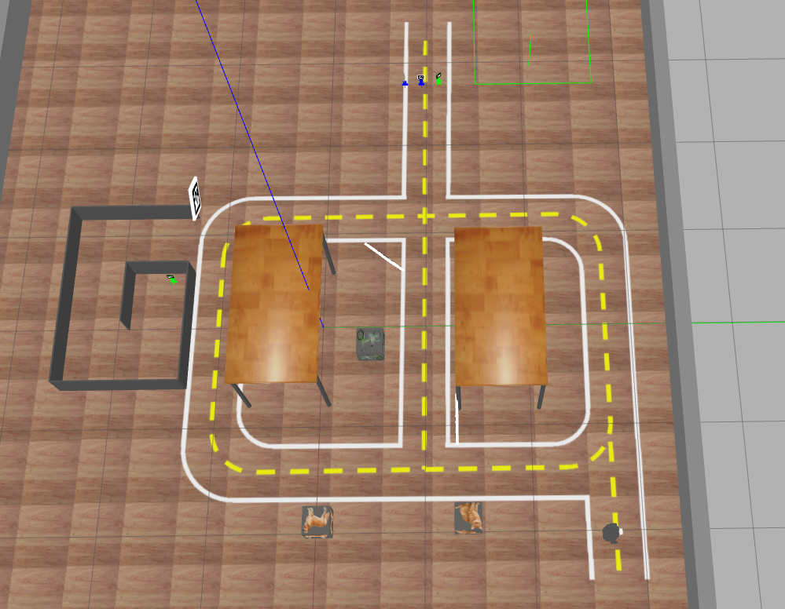
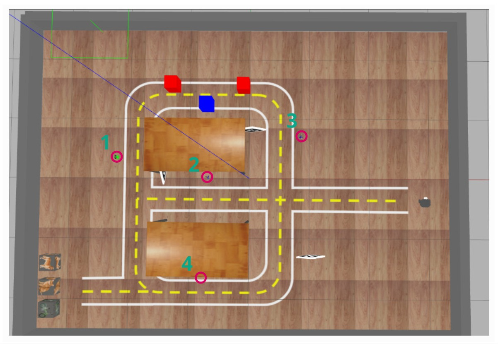

Projeto - Missão na 404
O objetivo do projeto é programar nosso robô para cumprir um conjunto de missões na sala 404. Utilizaremos o cenário apresentado a seguir.

Os grupos, compostos por até quatro integrantes, deverão trabalhar em conjuto no repositório do GitHub Classroom disponibilizado.
Link para repositório do projeto GitHub Classroom
Data de Entrega: 27/05
Instruções gerais
Aviso 1: Sempre desenvolvam nos arquivos .py dos respectivos exercícios.
Aviso 2: Lembre-se de realizar commit e push no seu repositório até o horário limite de entrega.
Aviso 3: Preencha o nome completo dos integrantes do seu grupo no arquivo README.md do seu repositório.
Aviso 4: Além de seu repositório, para todas os conceitos vocês deveram gravar um vídeo do seu robô executando a tarefa. O vídeo deve ser postado no Youtube.
No arquivo README.md do seu repositório existe o campo Link do Vídeo onde você deve preencher com apenas o link de cada video no youtube. Certifique-se de que o vídeo está público e que o link está correto. NUNCA de commit no vídeo, somente adicione o link.
Aviso 5: Para o projeto, as entregas são feitas utilizando o robô real. Entregas no simulador serão aceitas, conquistando no máximo o conceito B.
Aviso 6: Serão aceitos videos com entregas parciais que comprovam que seu robô é capaz de realizar parte das tarefas. Inclua o link dos vídeos no README. - É possível realizar a entrega parcial de conceitos superiores, por exemplo, entregar a parte de um conceito B antes de entregar a parte de um conceito C.
Configuração do Pacote (ROS 2)
- Preparação Inicial: Primeiro, aceite o convite do GitHub Classroom e clone o repositório dentro da pasta
colcon_ws/src/no seu SSD. - Criação do Pacote ROS 2: Dentro do diretório do seu repositório, crie um novo pacote nomeado
projeto_robcomp.- Dica: Para utilizar os modulos desenvolvidos no módulo 3, inclua o pacote
my_packagecomo dependência do seu pacote, e então, importe como nos exemplos do módulo 3.
- Dica: Para utilizar os modulos desenvolvidos no módulo 3, inclua o pacote
Atualização dos Repositórios
cd ~/colcon_ws/src/my_simulation
git pull
cb
Mapa Simulado
ros2 launch my_gazebo pista-24.launch.py
Descrição das Missões
O projeto é composto por 4 missões de complexidade crescente, envolvendo tanto o design de software quanto a utilização dos sensores e comportamentos do robô. É preciso concluir todas as missões anteriores para obter a nota da missão subsequente.
Cada missão deverá ser registrada em um ou mais vídeos, com o link adicionado no arquivo README e versionado utilizando o Releases do GitHub, com a tag do conceito atingido.

As missões envolvem os seguintes elementos:
-
Pista: O robô deve permanecer dentro da pista, retornando a ela o mais rápido possível caso saia.
-
Creepers: Bonecos semelhantes aos do Minecraft, que devem ser transportados até a área de entrega. São posicionados de forma fixa no mapa, como na imagem acima, mas em ordem (cor/ID) aleatória.
-
Drop Area: Caixas com imagens detectáveis pela MobileNet, local onde os creepers devem ser depositados. Elas são colocadas em locais fixos da pista.
-
Placas: Arucos de ID 100, 150, 250. O grupo pode colocalos em qualquer lugar, fora da linha branca, para auxiliar na navegação.
* Slalom: Sequência de três caixas coloridas dispostas em zigue-zague.
Para completar uma missão, você deve:
-
Capturar a tela do robô realizando a missão no simulador.
-
Gravar o robô realizando a missão na pista real.
2.1. Para filmar, é necessário agendar a preparação da pista com a equipe técnica, garantindo condições semelhantes para todos os grupos.
-
Incluir o link do vídeo no README do seu repositório e criar um Release com a tag referente ao último conceito alcançado.
-
Cada missão deve ser concluída em menos de 15 minutos.
-
Deixar o creeper em uma drop area inclui:
5.1. Parar próximo à drop area.
5.2. Posicionar-se de frente para a drop area.
5.3. Aproximar-se até ficar a 0.5m de distância.
5.4. Abaixar a garra e soltar o creeper em pé.
5.5. Retornar à pista sem derrubar o creeper.
As missões podem ser validadas ao longo do projeto. Solicite a validação da parte de requisitos de software antes de gravar.
Os argumentos de linha de comando para o seu código devem ser:
parser = argparse.ArgumentParser()
parser.add_argument('--cor', type=str, default='verde', help='cor do creeper desejado')
parser.add_argument('--id', type=int, default=10, help='id do creeper desejado')
parser.add_argument('--drop', type=str, default='bicicleta', help='drop area desejada')
args = parser.parse_args()
Missão C
Essa missão é a mais simples do projeto e envolve aplicar diretamente os conceitos trabalhados na disciplina. Os seguintes passos devem ser realizados:
- Crie um dicinário com as cores dos creepers e seus respectivas IDs para armazenar onde estão os creepers, como o exemplo abaixo:
creepers = {
'verde_10': ...,
'verde_11': ...,
'azul_10': ...,
'azul_11': ...,
}
-
O robô sai da posição inicial e visita todos os lugares onde os creepers podem aparecer para encontrar os creepers;
-
Ao encontrar um creeper, armazene onde ele está no dicionário - você pode armazenar a posição (x, y) ou referênciar a posição do creeper de outra forma;
-
Ao encontrar todos os creepers, o robô retorna para a posição inicial, pare e imprima o dicionário com as posições dos creepers.
Requisitos de projeto de software:
-
Uso de Classes: O código deve ser estruturado de forma orientada a objetos, utilizando classes para organizar as funcionalidades
-
Máquina de Estados: Implemente uma máquina de estados para gerenciar as diferentes etapas da missão;
-
Controle Proporcional: Utilize técnicas de controle proporcional para manter o robô na trajetória desejada, especialmente ao seguir a linha.
Nota final desta missão: 5,0
Entrega Parcial
- O robô segue a linha amarela;
- O robô segue a linha amarela da uma volta na pista e retorna a posição inicial;
- O robô segue a linha amarela e imprime a posição dos creepers.
Missão B
Essa missão utiliza os conceitos da missão anterior e adiciona a capacidade de derubar os creepers. Os seguintes passos devem ser realizados:
- O programa recebe um argumento na linha de comando: cor e o ID do creeper desejado;
1.1. Utilize a biblioteca argparse em Python;
1.2. Ou outro método de sua escolha.
-
O robô e derruba o creeper desejado;
-
Volta para a pista e retorna a posição inicial e para.
Requisitos de projeto de software:
-
Mesmo do C
-
Subscriber para Aruco: Crie um nó específico que identifica o creeper pela cor e ID desejados - tanto pode publicar todos os creepers encontrados quanto apenas o creeper desejado - é uma boa prática este nó se inscrever em um tópico flag que indica se o nó deve ou não processar.
Nota final desta missão: 8,0
Entrega Parcial
- O robô para ao encontrar um creeper em uma posição específica (1 dos 4 creepers);
- O robô derruba um creeper em uma posição específica;
- O robô derruba um creeper em uma posição específica e retorna a posição inicial.
Missão A
Essa missão utiliza os conceitos das missões anteriores e adiciona a capacidade de entregar os creepers na drop area. Os seguintes passos devem ser realizados:
- O programa recebe um argumento na linha de comando: cor eo ID do creeper desejado além da drop area desejada;
1.1. Utilize a biblioteca argparse em Python;
-
O robô sai visitando todos os lugares onde os creepers podem aparecer para encontrar o creeper desejado;
-
O robô pega o creeper desejado;
-
O robô segue para a região onde ficam as drop area;
-
O robô deixa o creeper desejado na drop area desejada;
-
O robô retorna para a posição inicial e para.
Requisitos de projeto de software:
-
Mesmo do B
-
Subscriber para MobileNet: Crie um nó para a leitura da MobileNet. Ele deve publicar um tópico com a posição (na imagem) e classe da caixa detectada - é uma boa prática este nó se inscrever em um tópico flag que indica se o nó deve ou não processar.
Nota final desta missão: 10,0
Entrega Parcial
- O robô para ao encontrar um creeper e se move para a drop area;
- O robô consegue pegar um creeper em um ambiente controlado;
Missão Desafio
Essa missão utiliza os conceitos das missões anteriores e adiciona a capacidade de entregar os creepers na drop area. Os seguintes passos devem ser realizados:
-
Slalom: Sequência de três caixas coloridas dispostas em zigue-zague.
-
Mesmo do A
-
Com a adição do
Slalom, o robô deve passar por todas as caixas coloridas, sem tocar nelas. -
No vídeo, o robô deve nescessariamente aparecer realizando o Slalom.
Requisitos de projeto de software:
- Mesmo do A
Nota final desta missão: PF + 1,0